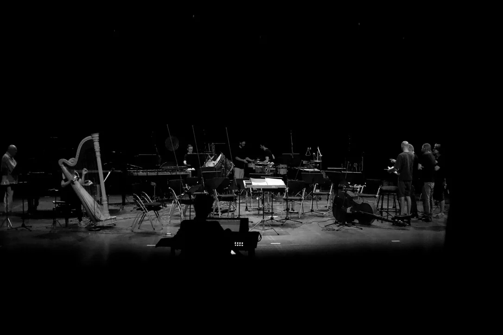

Composition · écriture · forme
Accompagnement en composition
Transformer une idée musicale en pièce construite : préciser le matériau, organiser la forme et choisir les gestes d’écriture utiles au projet.

01
Projets
Partir de ce que vous avez déjà.
Le travail peut accompagner une première pièce, une composition en cours, un dossier de portfolio, une musique pour l’image ou une recherche expérimentale. Le point de départ peut être une mélodie, une texture, quelques accords, une partition partielle ou une intention encore difficile à formuler.
Développer une pièce
Identifier le matériau qui porte le projet, organiser les proportions, les transitions, les contrastes et la continuité.
Préparer un dossier
Examiner la cohérence d’un portfolio, d’une partition, d’une maquette ou d’une candidature, sans promesse d’admission.
Clarifier une intention
Mettre des mots sur ce que vous cherchez, puis choisir les gestes musicaux nécessaires.
02
Travail
Les décisions que nous pouvons examiner.
- Idée et matériau : possibilités de transformation et directions musicales.
- Forme : continuité, proportions, transitions, coupe et développement.
- Harmonie et texture : couleurs, accords, timbres, registres et densité.
- Notation et orchestration : lisibilité, équilibre et réalisation instrumentale.
- Révision : passages fragiles et pistes concrètes de réécriture.
Déroulement possible
Lecture ou écoute du matériau, identification des zones solides et des points de blocage, comparaison de plusieurs solutions, puis formulation d’un plan de travail réalisable.
03
Documents
Ce que vous pouvez envoyer avant la séance.
- partition, esquisse ou page manuscrite ;
- fichier audio, MIDI ou maquette DAW ;
- description d’une commande, d’un projet ou d’un blocage ;
- portfolio ou dossier de candidature.
Vous n’avez pas besoin de tout envoyer : choisissez les éléments nécessaires à la question que vous souhaitez travailler.
04
Format
Une séance centrée sur votre travail réel.
La séance se déroule en ligne et peut combiner lecture, écoute, analyse, partage d’écran et formulation de pistes de travail. Elle est proposée en français.